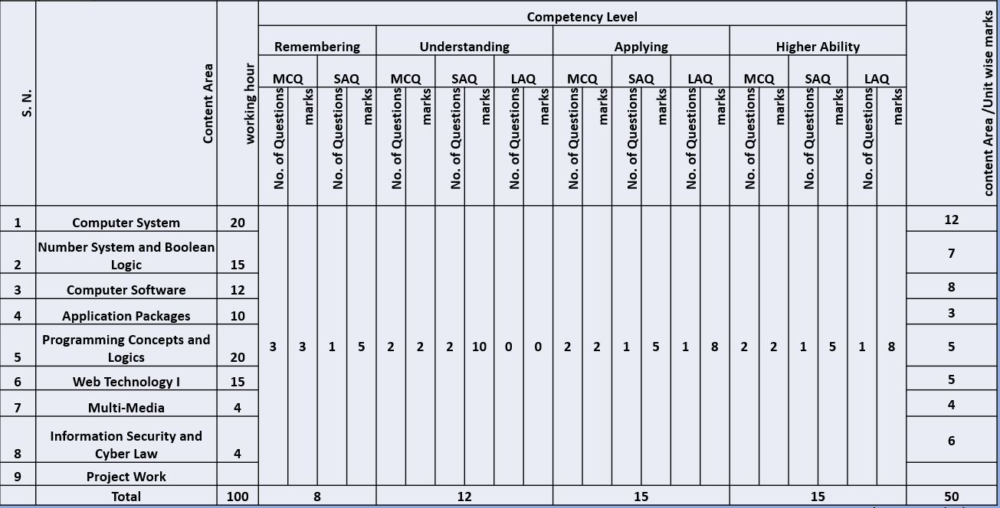
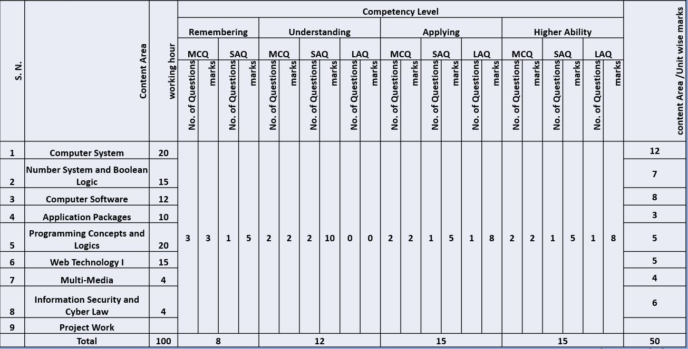
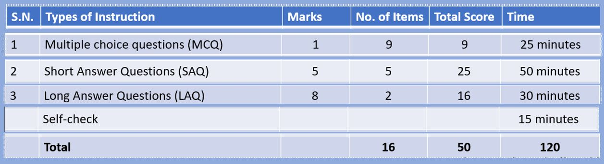
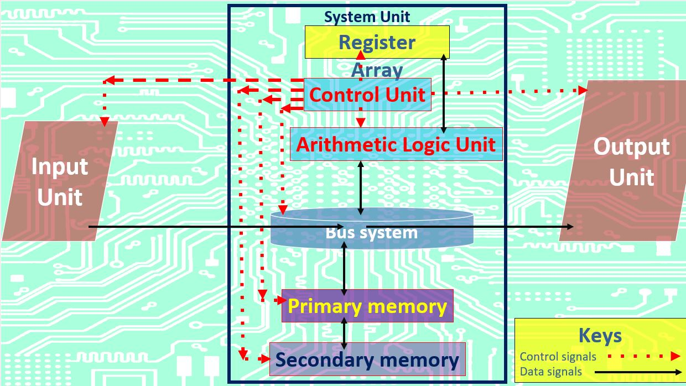
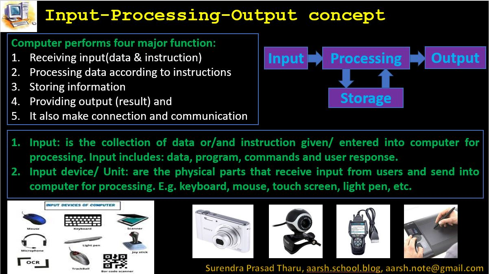
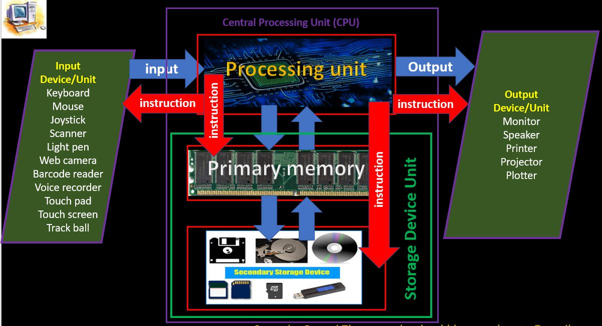
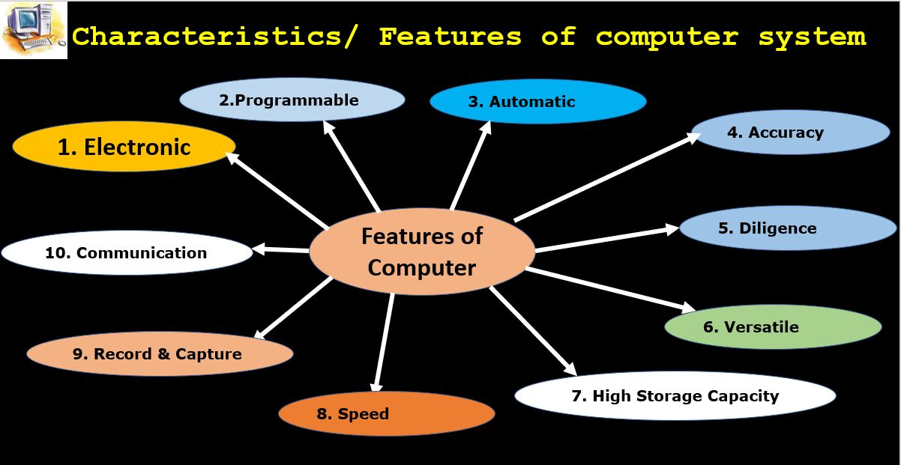
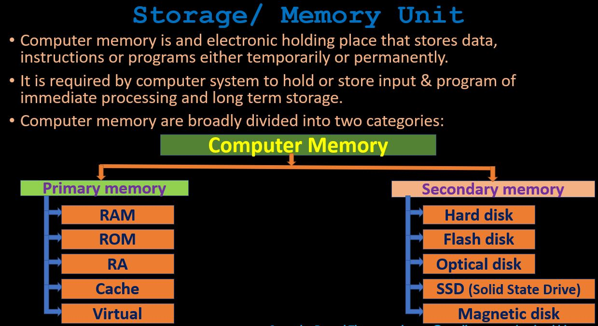
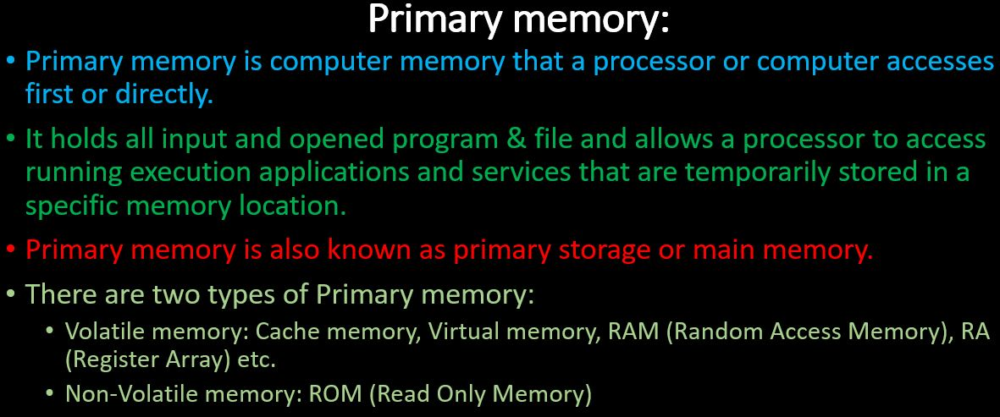
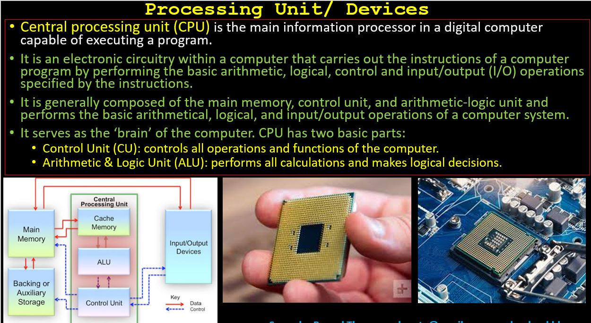

A. Course Content with Marks and Credit hour



Input: is the instruction/ command or / and data given to the computer for processing
Data: is the collection of raw facts or figures in the form of numbers, characters/ letters, symbols, sounds, images, collected by observing, measuring, counting, evaluating etc.
Information: is the meaningful or processed form of data on which decision and actions are taken. It is the well organized form of data for specific purpose. It is also called output/ result.
Processing: is the stage/ period of manipulating, organizing, calculating data according to given instruction for meaningful information.
Instruction: is the set of codes given to command/ order / instruct computer to work.
Program: is the set of instruction designed to direct & instruct the computer to perform task.
Computer / computer system: is an electronic device that accepts input, processes and stores them and provides output/ result.
Computer: is an artificial and programmable machine/device to assist human beings in all different fields for various tasks with the ability to accept input, process, store and provide output.
Green Computing : is the environmentally responsible and eco-friendly use of computer and their resources.
Computer (computer system) is an electronic device (machine) with the ability to take input
(data & instructions), to process, to store and to provide output (results).
Computer is a programmable machine which can be programmed to perform various tasks.
Almost all modern computers are digital computers they work on binary (1s & 0s) based
system.
It is designed to make tasks faster, standard, reliable and keep records for future use.


Process: Process: is the execution/operation of instruction/program to data for result.
Processing Unit/device: is the hardware that perform all processing task. It is also called Central processing unit, a brain of computer system. E.g. Microprocessor.
Storage: Storage: is the process of saving or holding data and instruction for processing Storage devices: are the physical parts that provide working space and hold input, program for temporary or permanently. It is also called memory unit. HD, RAM, ROM
Output:Output: is the result obtained after processing the input/ a processed information.
Output Unit/device: is the hardware that provides result or output to the user. Monitor, Speaker, Printer, Plotter etc.
Communication: is the process of transferring data and information


Electronic machine: computer works by converting electrical signals into binary digits or digital signals.
Programmable: Computer program is the set of instructions designed to operate specific tasks. Programmers design programs to make computers useful and versatile.
Automatic machine: computer operates according to instructions which is designed to operate or execute automatically as given instructions
Accuracy : computer provides 100% accurate results if it is given correct inputs. It is a GIGO (Garbage in garbage out) feature.
Diligent machine: is the ability to work for long time and repeated tasks without being tired and bored.
Versatile machine: is the ability to perform various tasks in different fields.
High storage capacity: Computer has high storage capacity to store software and information and also for working space
Speed: Computers can perform billions of calculations within fractions of a second. Actually most modern computers perform a task in a Picoseconds. The processing speed of computer is measured in the unit of Hertz (Hz).
ecord and capture:R almost all modern computers are capable to capture pictures and records
Reliable: Computers are designed in such a way that their every individual part has a very high life span.
Communicate: computer makes different ways of communication with various devices



Cache memory: is an extremely fast memory type that acts as a buffer between RAM and the CPU. It holds frequently requested data and instructions so that they are immediately available to the CPU when needed. Cache memory is a chip-based small-sized type of volatile computer memory that provides high-speed data access to a processor and stores frequently used computer programs, applications and data. Cache memory is the fastest memory available and acts as a buffer between RAM and the CPU. Hardware cache is also called processor cache, and is a physical component of the processor.
Virtual memory: is a feature of an operating system that enables a computer to be able to compensate shortages of physical memory by transferring pages of data from random access memory to disk storage. This process allows for RAM to be freed up so that a computer can complete the task. Virtual memory is an area of a computer system’s secondary memory storage space (such as a hard disk or solid state drive) which acts as if it were a part of the system’s RAM or primary memory.
